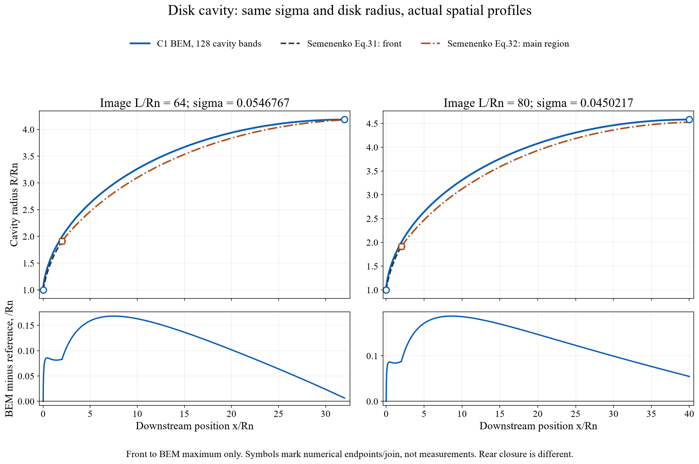
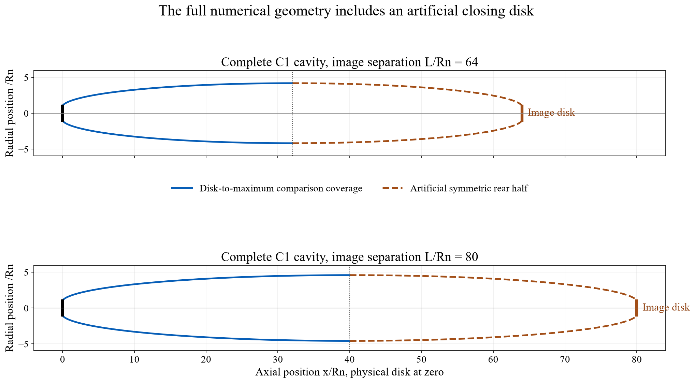
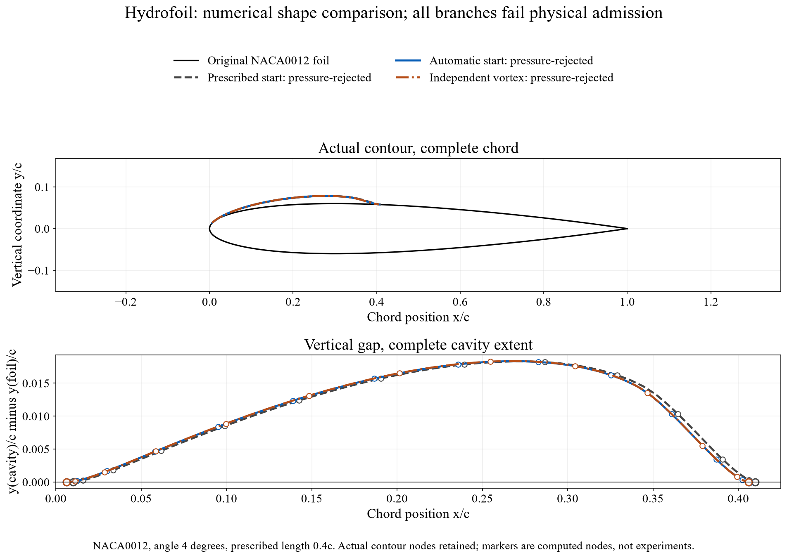
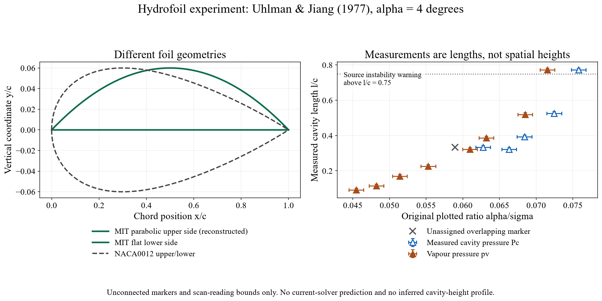

Cavity shape: computed profiles and published evidence
Compare the physical profile along the body, not only a maximum size or a small equation residual. These figures keep dimensional conventions, actual sample coverage and the status of each calculation visible.
Evidence has different limits for the two geometries. The disk comparison below overlays computed radius profiles with a published semiempirical correlation at the same cavitation number. The hydrofoil overlay contains rejected numerical trials; a matched experimental cavity-shape comparison is unavailable. Neither is presented as completed experimental validation.
| Case | What is compared | What remains unresolved |
|---|---|---|
| Axisymmetric sharp disk | Actual BEM radius R(x) and Semenenko's published front/main correlations, at identical σ and disk radius. | Rear closure differs; the extended-range mesh study has intermediate-mesh field failures. Correlations are not raw measured profile points. |
| Two-dimensional hydrofoil | Retained NACA0012 contour trials from two numerical methods. A separate primary experiment supplies the actual test geometry and cavity lengths. | All plotted numerical branches fail wetted-pressure admission. The experimental foil is different, and its length observations do not supply a cavity-height profile. |
| Disk with a cylindrical afterbody | The disk envelope can be checked against a specified dry cylindrical body. | Containment alone does not solve a partially wetted cylinder, its reattachment, re-entrant jet or gas leakage. |
Disk: a spatial profile comparison at matched σ
The reference is V. N. Semenenko (2001), Artificial Supercavitation: Physics and Calculation, PDF page 15, printed page 11–14, Eqs. 31–34 (retrieved primary scan). The source defines x̄ = x/Rn downstream from the disk plane and R̄ = R/Rn, where Rn is the physical disk radius. Its Eq. 32 is a semiempirical fit to natural disk-cavity measurements in 0.012 ≤ σ ≤ 0.057, with negligible gravity effects.
Front: R̄ = (1 + 3x̄)1/3.
Main region: R̄² = 3.659 + 0.847(x̄ − 2) − 0.236σ(x̄ − 2)², x̄ ≥ 2.
The declared range study supplies two BEM cases inside that σ interval. Their disk-to-maximum portions are compared below. No radius, origin, length or correlation coefficient was fitted to make the curves agree. The two literal reference values at x̄ = 2 are retained; their small mismatch comes from the printed rounded coefficients.

| Image separation L/Rn | Computed σ | BEM maximum: x/Rn, R/Rn | Eq. 32 maximum: x/Rn, R/Rn | Largest sampled |radius difference| / Rn |
|---|---|---|---|---|
| 64 | 0.05467674 | 32.000, 4.18440 | 34.820, 4.19026 | 0.16827, over x/Rn = 0–32 |
| 80 | 0.04502167 | 40.000, 4.58256 | 41.858, 4.53200 | 0.18748, over x/Rn = 0–40 |
The source maxima occur at different positions, including positions beyond the plotted BEM front-half coverage. Its separately reported approximate natural lengths, Eq. 34, are 69.750 and 83.850 Rn; these are not substituted for the numerical image separations 64 and 80 Rn.

Numerical status: at 128 cavity bands both cases pass the unchanged direct-field limits, 0.01U normal velocity and 0.02 in |Cp + σ|, including the denser 0.001–0.999 panel-fraction audits. At 64 bands both fail the normal-velocity limit. Scalar refinement is not uniformly monotone. A fine-mesh pass therefore does not establish a qualified wider domain or physical accuracy.
Disk/cylinder closure and reference limits
A cylindrical afterbody can be drawn inside a disk-generated envelope and tested for clearance R(x) − Rbody. A negative clearance must remain negative. This is a geometric containment test; it does not compute flow around an arbitrary cylinder. Semenenko distinguishes an end plate, closure on a cylinder and closure with an annular re-entrant jet (PDF page 10). Those are different boundary-value problems.
The finite radius of Eq. 32 at the independently reported Eq. 34 length is preserved. Its polynomial zero is not relabelled as measured physical closure. The review's Table 6 also prints a maximum-radius relation without the square root present in primary Eq. 28; primary equations govern the reference. Checked equations, source pages and endpoint diagnostics.
For a separate comparison against four actual disk measurements, see Waid's experimental forward dimensions. Those scalar measurements do not become spatial profile points on the figure above.
Hydrofoil: actual shapes, with rejected status preserved
The retained study uses NACA0012 at α = 4°, prescribed cavity length l/c = 0.4 and recovery fraction 0.15. It compares a prescribed start, an automatic smooth-start search and an independent vortex calculation. The plotted curves are their actual numerical contours. They are not digitized experimental interfaces and do not constitute a matched comparison with a paper.

The minimum sampled wetted Cp + σ is −0.0700183, −0.00696181 and −0.00406509 for these branches. Thus all leave liquid below vapour pressure outside the assumed sheet cavity and fail the model's physical-consistency screen. The automatic search improves the numerical diagnostic but does not create an admitted physical prediction. These are frozen research cases; their evidence cannot certify another solver version.
A primary hydrofoil experiment: match the geometry before the cavity
Alavi & Roohi (2026), Figure 139, traces the plano-convex comparison through Lemonnier & Rowe to Uhlman & Jiang (1977), MIT 83481-2 (retrieved report). The actual tested foil has a parabolic upper side, flat lower side and t/c = 0.06, with 4 in chord and 19.75 in span in a 20 in square tunnel. It is not NACA0006 or NACA0012. The reconstruction below follows the report's geometric description; it is not a supplied coordinate file.

A matched hydrofoil cavity-shape overlay is unavailable. These primary observations give cavity lengths, not a spatial h(x) dataset. Per-point speed and Reynolds number are not tabulated. The current NACA0012 trial cannot be inserted over those data as if the profile, tunnel, pressure basis and closure matched. No experimental interface points have been invented from the reported length.
Published hydrofoil shape examples remain useful as separate numerical benchmarks. Kinnas, chapter 9, Figure 9.8, shows a fixed-length/fixed-σ construction; Figure 9.13 illustrates the nonphysical negative thickness caused by an unsuitable detachment station. The underlying Kinnas & Fine (1993) NACA 16-series examples are not substituted for four-digit NACA geometry. Neither a historical numerical shape nor its published convergence is fresh experimental validation of this solver.
What do start and length mean, and why prescribe them?
Detachment xD/c is a spatial start station. Cavity length l/c is the downstream x-distance from that station to the assumed sheet closure, so xclosure/c = xD/c + l/c. It is not foil arclength, elapsed time or a cloud-shedding distance. For example, 0.01 and 0.40 mean a start at 1% chord and closure at 41% chord.
The hydrofoil interface solves an inverse, prescribed-length free-boundary problem: it computes the shape and the cavity-speed ratio, then σ = (qc/U)² − 1 and p∞ = pv + σρU²/2. Speed sets the dimensional pressure scale. At the same prescribed dimensionless inputs, changing U does not independently change the calculated dimensionless shape; it changes the required pressure.
A forward calculation instead fixes the actual pressures and speed, forms the target σ and solves for the unknown extent with appropriate detachment and closure conditions. An outer solve σ(l) = σtarget is possible only across a resolved, admissible branch. The automatic smooth-detachment option searches for the start while still prescribing length; it is not that forward length solve. The disk's sharp rim fixes detachment, but its solved image separation must still be identified as an image-model result.
The inverse formulation is a real numerical problem, useful for parameter studies and inverse design. It does not guarantee that every requested size has a physically admissible solution. An attached steady sheet and its closure do not describe a detached cloud. Shedding time, re-entrant-jet break-up, collapse and erosion require additional physics and validation.
Reproducibility and interpretation
Evidence preparation date: 1 November 2026. Source paths, hashes and extraction scope · Data-integrity checks. The profiles and marker readings are downloadable beside each figure. Figures use physical spatial coordinates; no measured curve is manufactured by connecting a few dimension observations.
Three questions remain separate: did the discrete equations converge, did independent field/geometry checks pass, and did a matched physical experiment agree? A small residual answers only the first. No universal percentage threshold or fitted closure adjustment is used to declare experimental success.